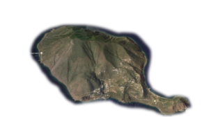

Le isole Lipari o Eolie sono l’arcipelago italiano più conosciuto d’Italia, Omero ne fa una delle tappe di Ulisse che vi approdò dopo essere sfuggito, con un inganno, al gigante Polifemo. Qui Eolo regalò all’eroe di Troia tre otri dove erano racchiusi i venti di: Erus, Auster e Aquilon mentre Zephir era rimasto libero per accompagnare le navi verso Itaca, la ciurma, curiosa di conoscere il contenuto degli otri ben gonfi li aprì, liberando i venti che per divertirsi un pò agitarono le ali a tal punto da scatenare una tempesta che fece naufragare la flotta di Ulisse. Così le isole Eolie sono state riscoperte dalla mitologia per le bellezze naturali e piacevolezza del clima, da un turismo internazionale, sempre più numeroso.
ISOLE EOLIE
Isole Eolie
LE MAGNIFICHE SETTE
Lipari
Latitudine:28°29°N. Longitudine:14°56°E Abitanti: 12.755
La maggiore delle isole è caratterizzata dalla presenza di ex cave di pomice ed ossidiana ed un museo archeologico. I centri abitati principali sono: Lipari, Canneto, Acquacalda, Quattropani e Pianoconte.
Salina
Latitudine:38°33°N. Longitudine:14°50°E Abitanti: 2.300
E’ Composta da due coni vulcanici, ricoperti da una fitta vegetazione, rappresenta la meta di transito da uccelli migratori di varia specie. I centri più importanti dell’Isola sono: Santa Marina di Salina, Malfa leni e Rinella.
Vulcano Mappa
Latitudine:38°23°N Longitudine:14°58°E Abitanti: 715
L’ultima eruzione risale al 1890, le spiagge sono scure di sabbia vulcanica e da sorgenti naturali sulfuree. Centro principale: Porto ponente, Porto di levante.
Panarae
Latitudine:38°38°N Longitudine:15°4°E Abitanti:
241 La più famosa isola dell’arcipelago, è un mix perfetto tra arte, cultura e mondanità. San Pietro è il principale centro seguito da Dittella e Drauto.
Filicudi
Latitudine:38°35°N Longitudine:14°34°E Abitanti:
235 E’ un isola abitata sin dalla preistoria, di origine vulcanica culmina a 750 m. sul monte delle felci. Principali centri: Filicudi, Pecorini e Val di Chiesa.
Alicudi
Latitudine:38°32°N Longitudine:14°24°E Abitanti:
105E’ la più piccola isola dell’arcipelago, si raggiunge facilmente quota 675 m. ed ammirare un paesaggio mozzafiato. Principale centro Alicudi
L’isola di Salina è l’ultima delle maggiori, la frazione di Lingua e la sua antica salina danno il benvenuto al visitatore che giunge dal mare, la sera si può gustare la mitica granita di fichi servita nella suggestiva piazzetta del lungomare di Lingua. Sull’isola di Salina si trova la spiaggia di Pollara con le sue caratteristiche grotte ancora oggi utilizzate per la dimora di barche dai pescatori. Al centro dell’isola troviamo la località di Valdichiesa, grazie all’altitudine di 300 m. e l’influenza della vicina e lussureggiante “fossa delle felci” ci delizia di un clima mite e fresco anche nelle giornate più torride.
Se cercate un’atmosfera mondana l’isola di Panarea è il posto ideale, luogo di approdo di lussuosi natanti che sbarcano noti artisti e ricchi industriali che affollano le strette stradine della cittadina. L’ambiente è molto stravagante le strade sono percorse a piedi scalzi ed i caftani bianchi sono l’abito preferito, per una vacanza casual e spensierata. La notte viene resa ancora più suggestiva dal buio delle stradine isolate percorse dai viandanti con delle semplici torce, come delle lucciole nella selvaggia campagna. La discoteca apre le porte dopo mezzanotte e si spopola al giungere dell’odore dei cornetti appena sfornati dal bar del porto, costante luogo di ritrovo della movida.
Vulcano isola popolata solo negli ultimi tempi, il cratere è stato in attività fino al 1890, infatti gli abitanti facevano i pendolari in barca per coltivare le fertili terre. Le spiagge di sabbia nera richiamano escursionisti incuriositi anche dalle calde sorgenti sulfuree, i più temerari si cospargono di fango per godere degli effetti termali, state attenti, le acque sulfuree scoloriscono i costumi.
Isole Eolie spiagge stupende, panorami mozzafiato, tramonti romantici, cucina mediterranea e vita mondana, questo ed altro, fanno delle Isole Lipari la meta e la residenza di artisti di fama nazionale e un ambiente colto ed interessato alla storia dei siti archeologici ai fenomeni naturali del vulcano Stromboli sempre in attività, alle sorgenti sulfuree dell’Isola Vulcano alle terme romane alle cave di pomice ed ossidiana di Lipari fino al gustosissimo cappero di Alicudi e Filicudi.

L’isola di Stromboli è l’attrattiva turistica delle isole Eolie più affascinante, qui la forza della natura piega la volontà umana, uno spettacolo che si ripete da più di 165.000 anni colorito di rosso e tuonanti frastuoni. Se siete temerari potete passare la notte sulla cresta di Pizzo di Sopra ed osservare l’attività esplosiva a debita distanza. L’attività vulcanica è costantemente monitorata dall’Istituto Nazionale di Geofisica e Vulcanologia di Catania che ne divulga costantemente tutte le notizie sul suo stato.
Le sette isole sono state iscritte alla Lista del Patrimonio Mondiale Unesco nel dicembre del 2000, per la loro morfologia vulcanica che rappresenta un modello storico nella evoluzione degli studi della vulcanologia mondiale. Le Isole Eolie sono uno straordinario laboratorio che fornisce costantemente occasioni di studio delle più svariate attività vulcaniche. Studiate sin dal XVIII secolo le isole hanno fornito alla vulcanologia due tipi di eruzione (vulcaniana e stromboliana) e hanno occupato, di conseguenza, un posto importante nella formazione di tutti i geologi per oltre 200 anni. Il sito continua ad arricchire il campo degli studi vulcanologici. Non possono mancare le meravigliose spiagge, cale e grotte, i maestosi faraglioni, la varietà e ricchezza di fondi marini e più di settemila anni di storia.
Le spiagge delle isole Eolie
ISOLA DI LIPARI
spiagge di Acque Calde, Canneto, spiaggia Bianca La spiaggia bianca è considerata la più bella dell’isola di Lipari, si scaglia contro la colata di ossidiana delle Rocche Rosse, si trova vicino alle altre spiagge di Canneto ed Acqua Calda, quest’ultima riscaldata da sorgenti di origine vulcanica, altre calette sono raggiungibili esclusivamente via mare, da non perde una emozionante giro dell’isola in barca.
ISOLA DI SALINA
Spiaggia di Pollara, Rinella, dello Scaro, Santa Marina di Salina Senza dubbio la spiaggia di Pollara è una delle prime mete da visitare, le sue caratteristiche grotte, utilizzate sin da tempi remoti , sono state dimora nei diversi secoli da antiche civiltà. La spiaggia di trova sul quel che rimane del bordo di un cratere sprofondato in mare. Le pareti rosse della piccola baia, al tramonto, si tingono di un rosso più acceso e fanno da cornice al sole che lentamente sparisce in mare. La spiaggia di Lingua si trova su una striscia di terra dove, una antica salina , il faro solitario e pace assoluta, disegnano un paesaggio idilliaco naturale.
ISOLA DI VULCANO
Sabbie nere, del Gelso, dell’Asino Che dire, l’odore pungente caratteristico dello zolfo vi giunge prima della vista della spiaggia, l’isola di Vulcano è stata da poco abitata perché l’intenza attività vulcani non permetteva di avvicinarsi fino alla sua conclusione nel 1890. Le solfatare sono un evidente manifestazione che il Vulcano è ancora attivo, prima che si risvegli, ne possiamo approfittare per continuare a fare dei caldi terapeutici bagni nelle pozze solfuree.
ISOLA DI PANAREA
Cala Junco, Zimmari e Calcara Cala Junco la più affollata spiaggia delle Eolie nei pressi del sito archeologico risalente all’età del Bronzo 1440 a.c. , si giunge a piedi dal paese, attraversando una stretta e panoramica viuzza.
ISOLA DI STROMBOLI
Spiaggia della forgia vecchia, di Scari, Ficofrande, Punta Lena L’unica spiaggia di facile accesso molto frequentata è quella di Ficogrande, qui si può trovare conforto dalla calura nei tanti bar e ristorantini caratteristici.

La Sicilia si trova nel cuore del Mediterraneo , crocevia di civiltà e culture di mondi vicini e lontani, inevitabile fusione di tradizioni culinarie di diversi popoli che hanno sfruttato le risorse tipiche locali come cereali, frutta, verdura, prodotti del latte, pesce, pollame, vino abbondanti sul territorio Italiano e siciliano in particolare. Potete trovare numerose ricette tipicamente siciliane su www.cheftime.it ricette…sfiziose